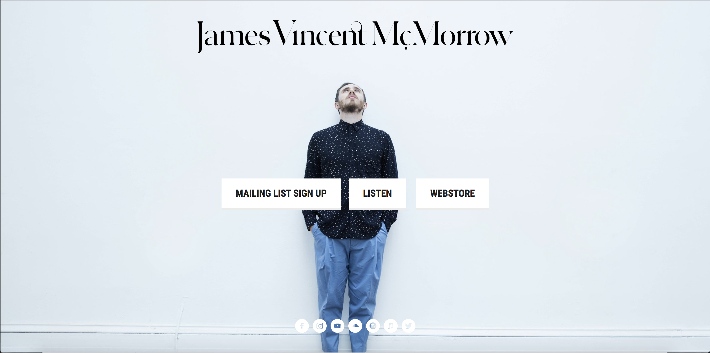
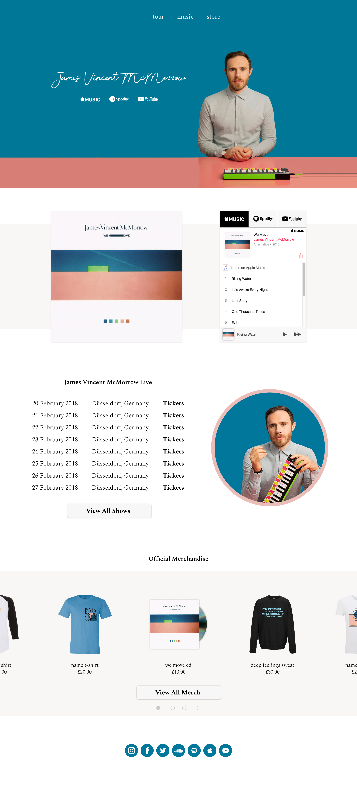

I discovered this Irish singer by the name of James Vincent McMorrow, when his song "Get Low" found its way to one of Apple Music's playlist. I decided to check out more of his work and instantly became a fan, but when I decided to dive deeper in my stalking of his work I was surprised by his official website.
Web
Sketch & Adobe Creative Suite
For a recording artist with a number one album in his country, you would believe that his website would be a lot more informative and not lackluster. Above, is a screenshot of the current website that he uses to promote his work, tour, and merchandise. With the resources I was able to find, I challenged myself to design a more lively, modern and clean website that would advertise his music, and other works.
As someone who is extremely interested in the music industry, I'm very familiar with how music promotion works. I know that most revenue for an artist does not come from selling their albums but rather their concerts and merchandise. I took this into account and made sure that these elements would be equally as promoted as the music.
Doing some digging, I was able to find a great photo shoot of James which matched the theme of his latest album (during the design of this concept website). It is common for artists to promote their latest works and I found this through by researching artists like Taylor Swift and Drake's websites where their last album/song is very prominent in the design.
The one concept I do agree with the current website is the simplicity and that was a factor I wanted to keep with my redesign. I also found their current solution of using buttons to redirect the user to another page was an easy way out to complete the website. I broke down these major aspects into sections into the website and using simple tools such as an embedded player so that a potential fan can hear snippets on the website itself directly.
I met in the middle of simplicity and informative to come up with these final designs shown below. There is not much to the website but it still covers the grounds of promoting music, merchandise, and his concerts. All of these sections have an action item for a fan to interact with and connect with James' work.
